LearnARcade
Navigating learning experiences for dyslexic adults
LearnARcade, a mock learning tool, was conceived to validate the potential of AR systems. It employs user experience strategies tailored to dyslexic adults and incorporates engagement strategies to encourage sustained usage.
Design thinking pointed at AR. That wasn't enough to act on.
The initial approach highlighted a promising role for augmented reality in multi-sensory learning. But to develop an intervention that genuinely improves the well-being of adults with dyslexia, a deeper understanding was needed — of their challenges, of how effective MSL actually is, and of how AR should be applied. That holistic comprehension is what makes a targeted solution possible rather than a plausible-sounding one.
- ARAugmented Reality
- MSLMulti-Sensory Learning
- UXUser Experience
How might we create a new learning experience with AR and MSL techniques for dyslexic adults, while creating an immersive experience?
A third diamond, added on purpose.
The project uses a customised iteration of the Double Diamond, referred to here as the Triple Diamond Research Framework, synergised with Human-Centric Design. The conventional Double Diamond runs Discover, Define, Develop, Deliver. The third diamond adds an initial step in front of all of it — Explore and Identify — which is where an intervention for a group this often misread either earns its evidence or doesn’t.
That makes three diamonds, each ending in something you can hold the next one to. Problem identification goes from exploring augmented reality to identifying an opportunity, turning a research interest into an opportunity. Solution identification runs solution discovery into defining design parameters. Solution execution covers design and development, then usability testing and feedback, and ends at a potential solution rather than a finished one — which is the honest name for what a mock tool produces.
Human-Centric Design is the lens laid over the whole thing: people (the need, the relationships and the ethics), problem (aids, presence and impact) and technology (features, feasibility and presence). Only what sits in the overlap of all three counts as a design direction. The ethics sit inside the framework rather than beside it, which matters for a group that has often been designed at.
Case study work sits inside a non-disclosure agreement, so pseudonyms are used with limited access. One case study is public and load-bearing: Pokémon Go, with over 100 million downloads and 28.5 million active users worldwide, and the wave it inspired in Jurassic World Alive and Ingress. What it demonstrates is that AR integration plus social incentives can hold attention at scale — the exact problem a learning tool has.
Simplifying the problem, one question at a time.
Before any of it could be designed, the problem was reduced to five plain questions. Who — dyslexic adults, facing a lack of therapy interventions and often developing coping mechanisms on their own. What — augmented reality, which delivers immersive experience by integrating virtual elements into reality, applied to a learning disorder that is known to benefit from multi-sensory approaches. When — at development stage, meaning ongoing research rather than a settled answer.
Why — to create immersive, engaging learning experiences, and to understand, assist and improve how dyslexic adults learn. How — expert consultations, case studies, workshops, and the development of a prototype tool, LearnARcade, built to validate AR’s potential rather than to prove it.
The stakeholder map is what keeps that honest. Dyslexia in adults sits at the centre, ringed first by the people with direct contact — medical (psychologists, psychiatrists, general practitioners, diagnostic centres), professional (employers, HR, disability assistants, recruitment), educational (disability advisers, tutors, student unions, university policy) and personal (parents, siblings, caregivers, tutors) — and then by the institutions further out: the NHS, dyslexia associations, ministries, laws, the WHO, insurers and the inclusive workplace. An intervention aimed at the centre has to survive all of it.
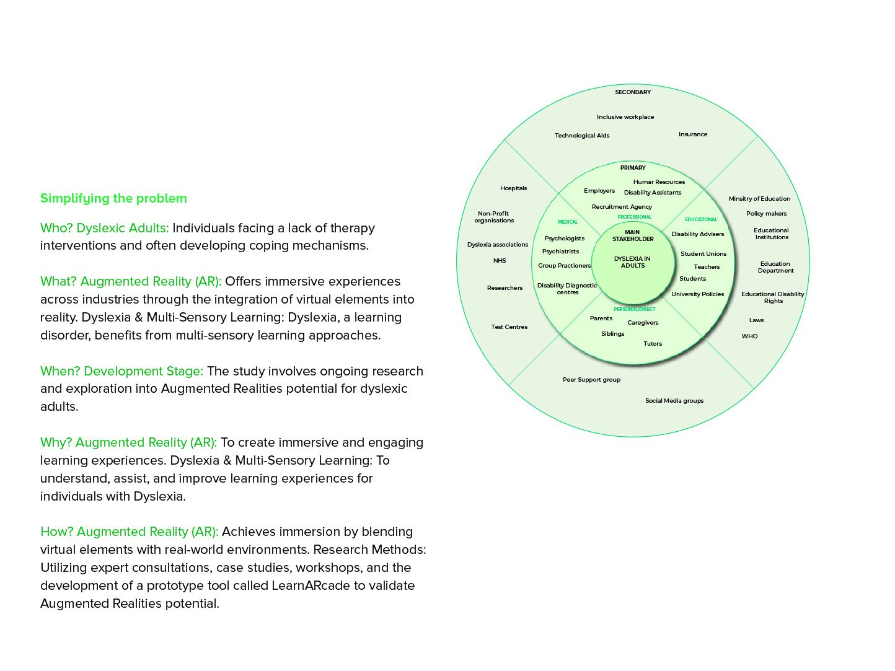
Built as a habit, not a course.
The intervention takes the form of a UX design strategy tailored to dyslexic adults, leveraging Nir Eyal's "Hooked" model — a four-stage process for habit-forming engagement. Defining the brief first meant mapping every challenge along the journey from diagnosis to receiving effective help, including the points where people slow down or abandon seeking assistance altogether.
- TriggerActivates interaction, through external or internal prompts — notifications, reminders, or a personal need.
- ActionThe user does the thing the trigger intended: exploring, reading, or engaging in a learning activity.
- Variable RewardProgress, achievements or personalised content, with an element of unpredictability.
- InvestmentTime, effort or personalisation put in — which deepens the connection to the product.
The solution had to be user-friendly, easily accessible and induce self-learning. Gamifying it is what makes that plausible: the reward loop does the work that motivation alone doesn't.
LearnARcade.
A placeholder brand name for a mobile application showcasing AR in the realm of multi-sensory learning. It is a mock tool — designed to offer a new and immersive learning experience by engaging multiple senses, in a safe and gamified environment for adult learning that is conducive to self-directed study.
The research also emphasised awareness of learning disabilities in public space. Using QR codes and smart AR-based poster designs, immersive experiences can be created that generate interest and enhance awareness well beyond the app itself.
The project aligned with several UN Sustainable Development Goals:
- Good Health & Well-Being
- Quality Education
- Industry, Innovation & Infrastructure
- Reduced Inequalities
The exploration here only scratches the surface, indicating a field that can yield substantial social impact — and the possibility of inspiring a new wave of creative projects.
What shaped the work as much as the brief did.
A non-disclosure agreement over the case study work. Pseudonyms are used with limited access, which is why the public, load-bearing evidence is Pokémon Go rather than primary fieldwork I can name.
A group that is routinely misread. Dyslexia in adults is under-researched compared with children, and much of the available material is about schooling. The Triple Diamond exists precisely because the research phase could not be treated as a formality.
A mock tool, not a build. LearnARcade is a placeholder brand for a demonstration, so the AR interactions are designed and argued rather than engineered and tested on device.
What I would do differently.
I would test the Hooked loop with dyslexic adults before committing to it. Variable reward is a powerful mechanic and an ethically loaded one — applied to a group that has often been failed by education, the line between motivating and manipulating is one I would want participants to draw, not me.
I would also narrow the scope. The project reaches for four UN Sustainable Development Goals and for public AR poster awareness alongside the app itself; a tighter claim, evidenced properly, would carry more weight than a broad one carried by argument.
Fifteen spreads, front to back.
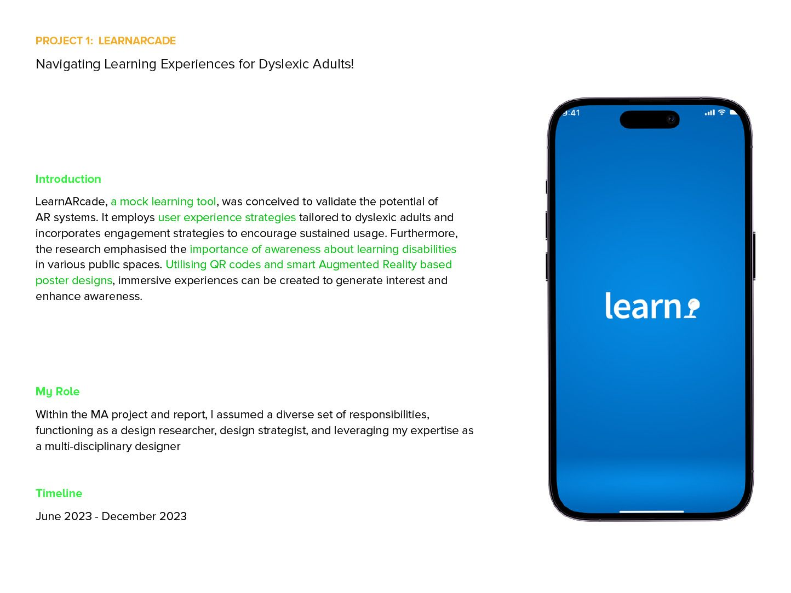
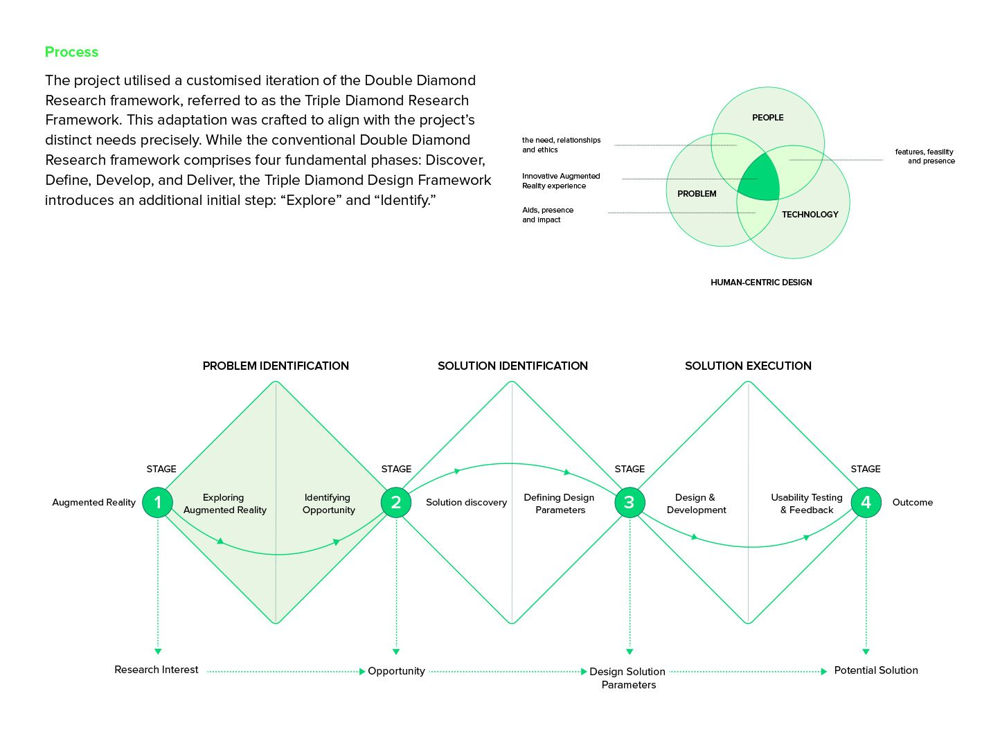
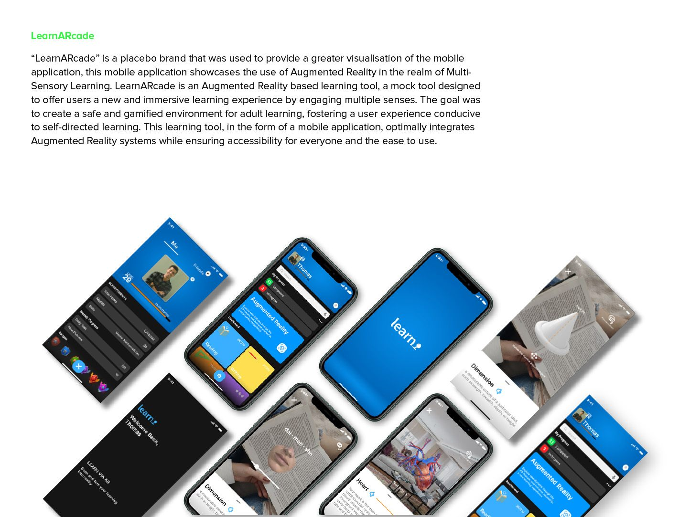
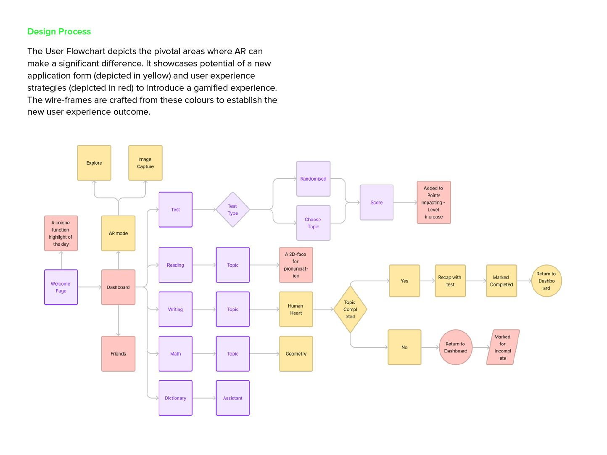
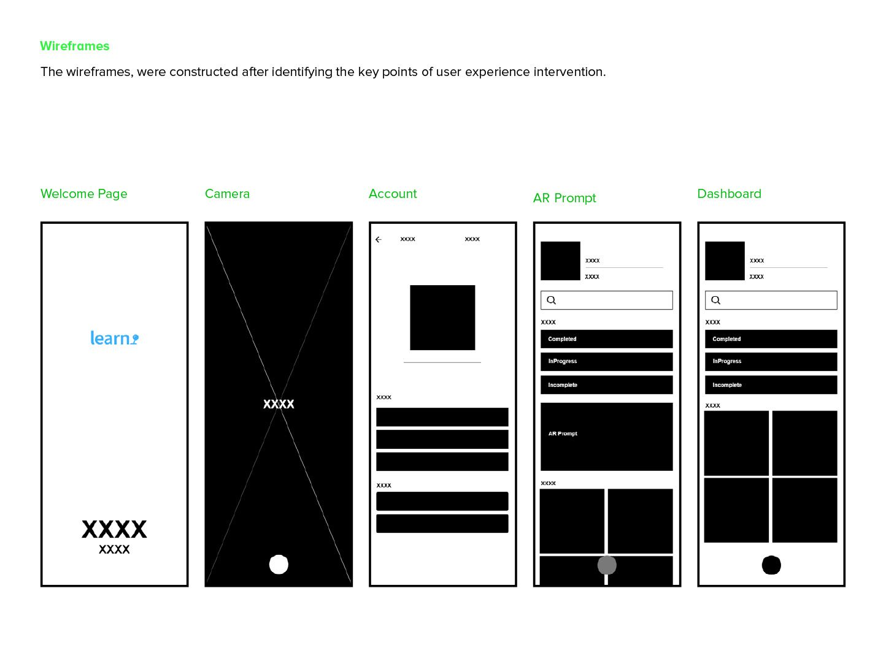
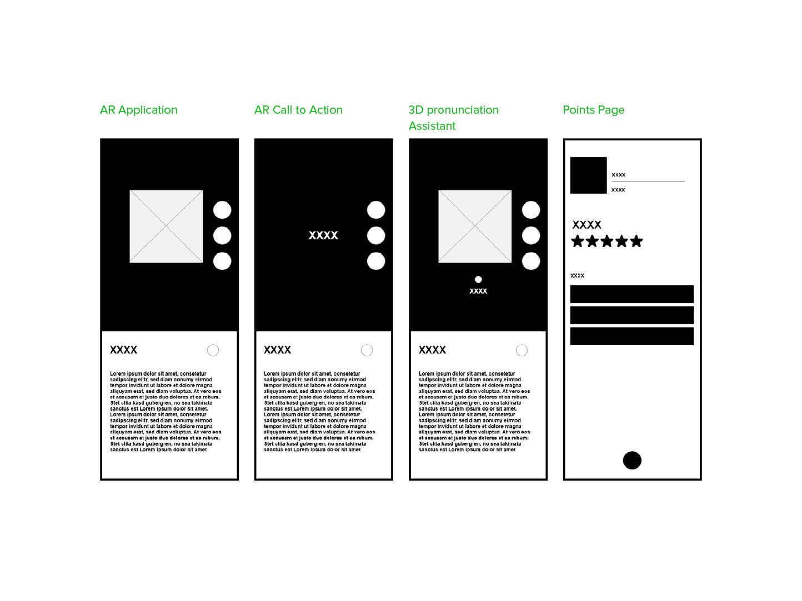
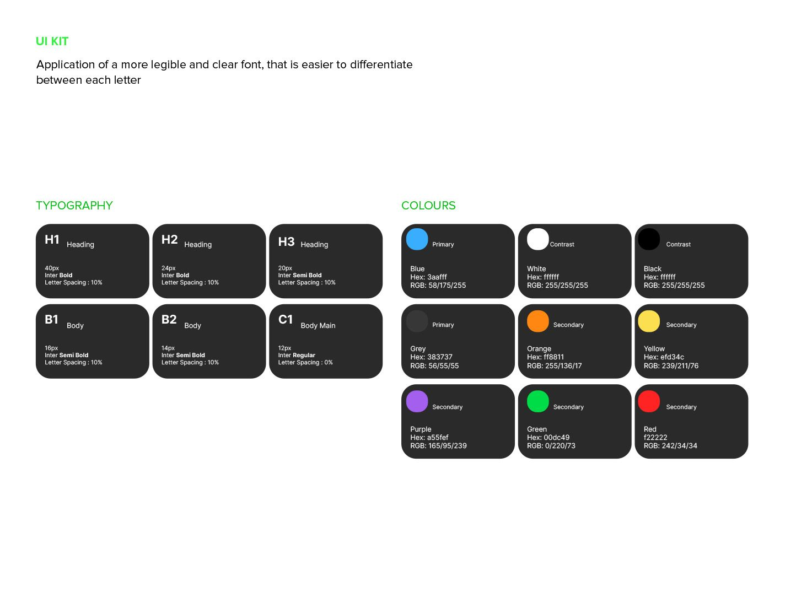

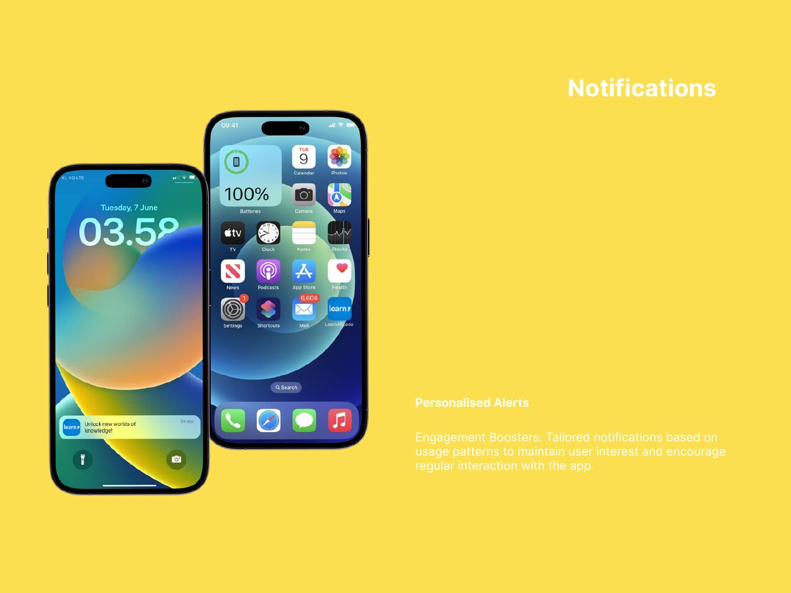
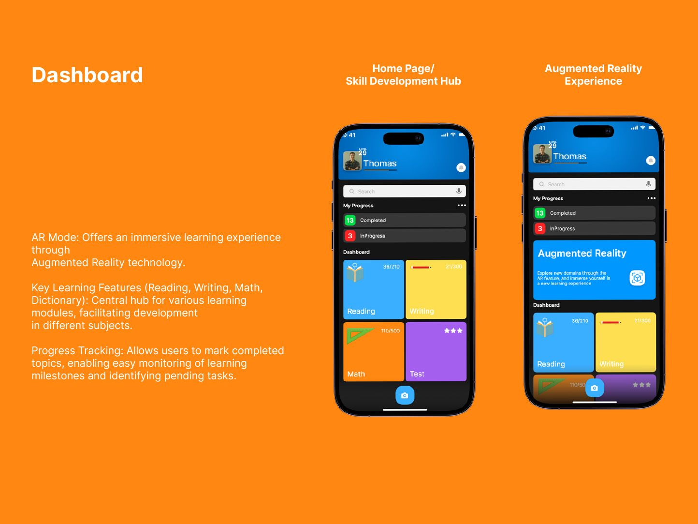
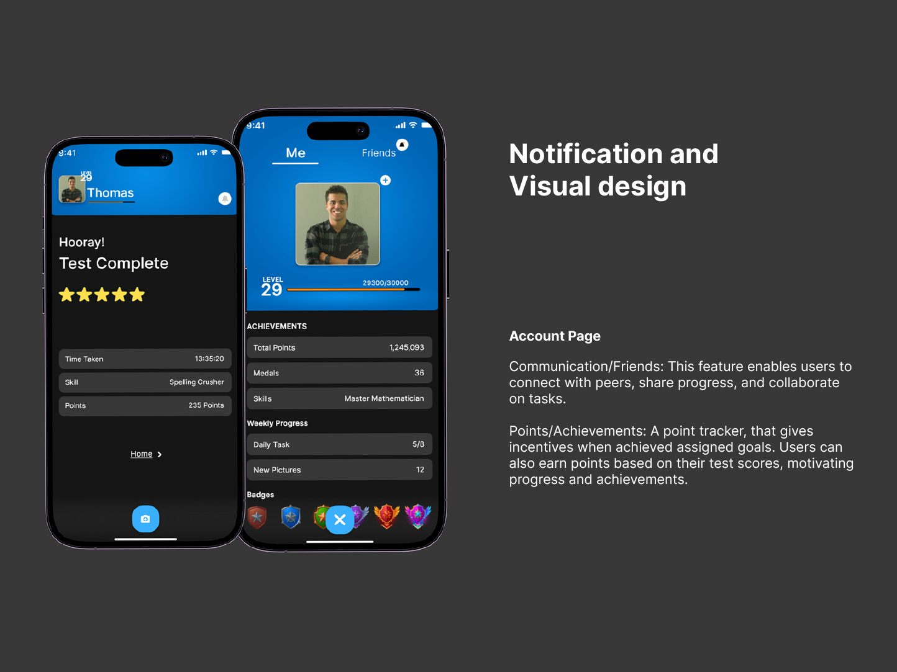
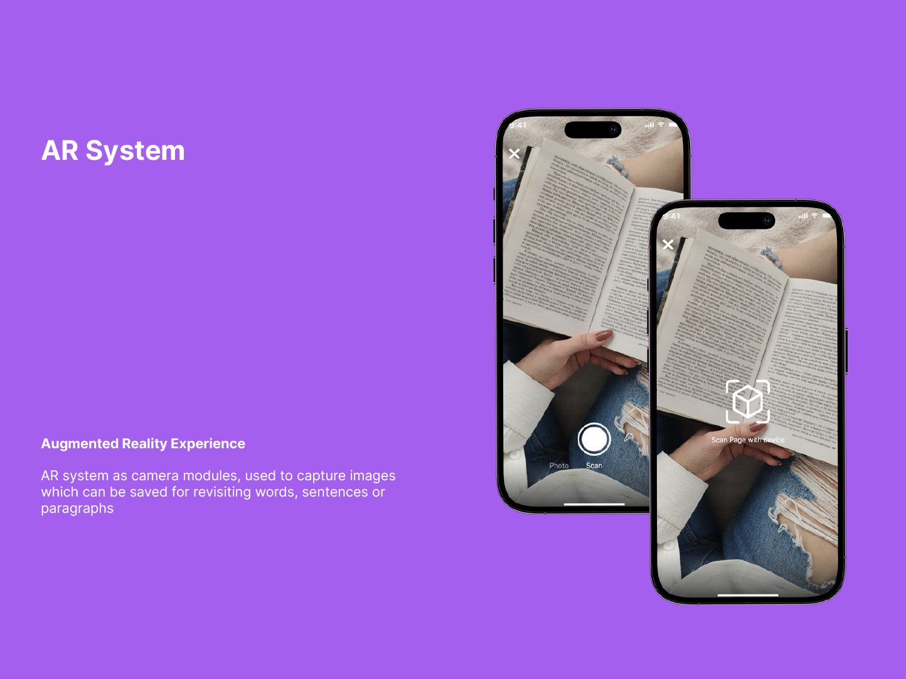
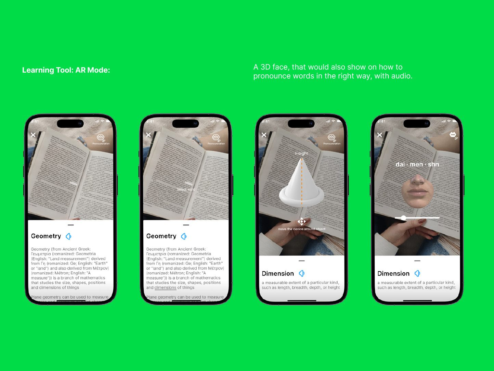
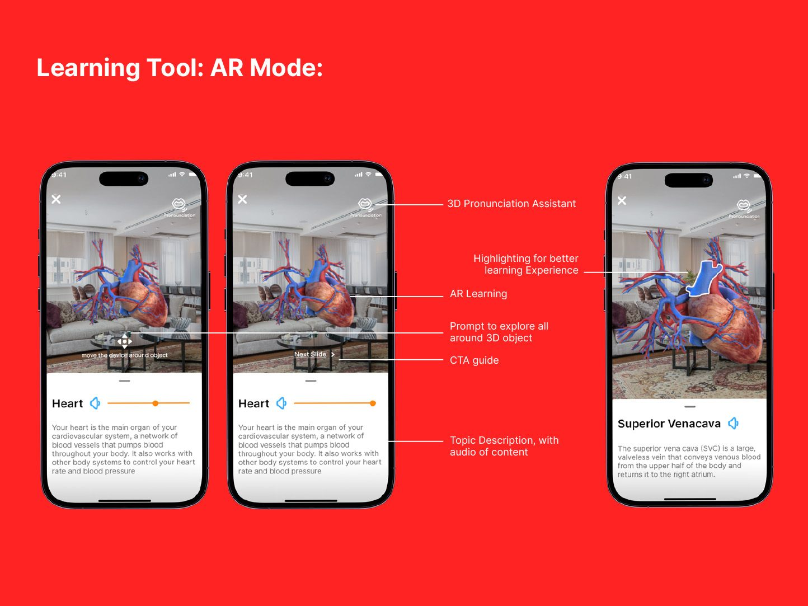